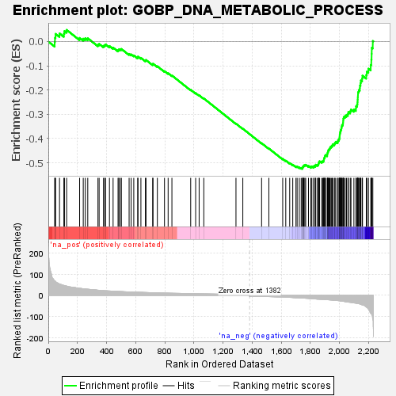
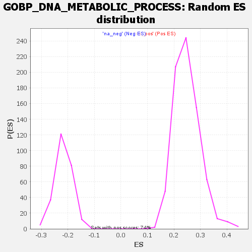

| Dataset | rank |
| Phenotype | NoPhenotypeAvailable |
| Upregulated in class | na_neg |
| GeneSet | GOBP_DNA_METABOLIC_PROCESS |
| Enrichment Score (ES) | -0.5247496 |
| Normalized Enrichment Score (NES) | -2.424577 |
| Nominal p-value | 0.0 |
| FDR q-value | 0.0 |
| FWER p-Value | 0.0 |

| SYMBOL | RANK IN GENE LIST | RANK METRIC SCORE | RUNNING ES | CORE ENRICHMENT | |
|---|---|---|---|---|---|
| 1 | TOP1MT | 44 | 69.093 | -0.0026 | No |
| 2 | MAPK3 | 46 | 67.413 | 0.0149 | No |
| 3 | NUDT15 | 50 | 66.188 | 0.0311 | No |
| 4 | KAT5 | 77 | 53.901 | 0.0331 | No |
| 5 | TK2 | 107 | 47.166 | 0.0318 | No |
| 6 | KPNA1 | 111 | 45.750 | 0.0426 | No |
| 7 | SPIRE2 | 126 | 43.723 | 0.0476 | No |
| 8 | RRM2B | 215 | 33.336 | 0.0144 | No |
| 9 | SMPD3 | 240 | 31.113 | 0.0113 | No |
| 10 | PELI1 | 254 | 30.092 | 0.0131 | No |
| 11 | CAMSAP3 | 271 | 29.092 | 0.0132 | No |
| 12 | KDM1A | 341 | 24.442 | -0.0132 | No |
| 13 | SRC | 349 | 23.916 | -0.0102 | No |
| 14 | NFIB | 379 | 22.218 | -0.0181 | No |
| 15 | POLD3 | 387 | 21.974 | -0.0156 | No |
| 16 | TP73 | 393 | 21.750 | -0.0122 | No |
| 17 | TGFB1 | 420 | 20.842 | -0.0190 | No |
| 18 | EME2 | 445 | 19.581 | -0.0253 | No |
| 19 | PARP10 | 479 | 18.818 | -0.0360 | No |
| 20 | NYNRIN | 484 | 18.660 | -0.0329 | No |
| 21 | ATRX | 493 | 18.294 | -0.0319 | No |
| 22 | AKTIP | 502 | 18.029 | -0.0309 | No |
| 23 | JMY | 555 | 16.199 | -0.0514 | No |
| 24 | DNASE2 | 569 | 15.772 | -0.0534 | No |
| 25 | NEK7 | 587 | 15.380 | -0.0574 | No |
| 26 | BTG2 | 614 | 14.895 | -0.0659 | No |
| 27 | NUDT16L1 | 616 | 14.851 | -0.0624 | No |
| 28 | KAT2B | 636 | 14.317 | -0.0676 | No |
| 29 | FGFR4 | 667 | 13.534 | -0.0784 | No |
| 30 | SETD7 | 671 | 13.508 | -0.0762 | No |
| 31 | NPPC | 717 | 12.404 | -0.0944 | No |
| 32 | SAMHD1 | 719 | 12.402 | -0.0915 | No |
| 33 | HNRNPD | 749 | 11.999 | -0.1022 | No |
| 34 | AXIN2 | 798 | 10.901 | -0.1222 | No |
| 35 | MC1R | 823 | 10.550 | -0.1309 | No |
| 36 | FBXO6 | 849 | 10.100 | -0.1401 | No |
| 37 | SMARCD3 | 978 | 8.234 | -0.1990 | No |
| 38 | CBS | 1012 | 7.881 | -0.2127 | No |
| 39 | PARP9 | 1036 | 7.513 | -0.2217 | No |
| 40 | H2AC25 | 1068 | 7.086 | -0.2346 | No |
| 41 | WAS | 1289 | 4.745 | -0.3384 | No |
| 42 | BCL11B | 1336 | 4.269 | -0.3592 | No |
| 43 | ZNF365 | 1465 | -5.097 | -0.4190 | No |
| 44 | DMC1 | 1515 | -5.843 | -0.4408 | No |
| 45 | FBXO4 | 1610 | -7.803 | -0.4836 | No |
| 46 | S100A11 | 1631 | -8.478 | -0.4909 | No |
| 47 | GAR1 | 1658 | -9.432 | -0.5008 | No |
| 48 | NEIL3 | 1679 | -10.319 | -0.5076 | No |
| 49 | IL7R | 1701 | -11.098 | -0.5147 | No |
| 50 | RAD54L | 1709 | -11.402 | -0.5150 | No |
| 51 | DDX11 | 1724 | -11.881 | -0.5185 | No |
| 52 | RAD51AP1 | 1737 | -12.402 | -0.5209 | No |
| 53 | GINS1 | 1746 | -12.697 | -0.5214 | Yes |
| 54 | MYC | 1748 | -12.808 | -0.5184 | Yes |
| 55 | EME1 | 1749 | -12.842 | -0.5150 | Yes |
| 56 | PTTG1 | 1754 | -13.090 | -0.5134 | Yes |
| 57 | SFR1 | 1756 | -13.162 | -0.5104 | Yes |
| 58 | ZGRF1 | 1762 | -13.349 | -0.5092 | Yes |
| 59 | PSMC3IP | 1768 | -13.573 | -0.5080 | Yes |
| 60 | STN1 | 1787 | -14.356 | -0.5127 | Yes |
| 61 | GINS2 | 1803 | -15.521 | -0.5158 | Yes |
| 62 | USP3 | 1810 | -15.741 | -0.5144 | Yes |
| 63 | POLQ | 1823 | -16.321 | -0.5158 | Yes |
| 64 | EXO1 | 1826 | -16.427 | -0.5124 | Yes |
| 65 | KIF22 | 1835 | -16.927 | -0.5117 | Yes |
| 66 | UCHL5 | 1837 | -17.110 | -0.5076 | Yes |
| 67 | RBBP8 | 1849 | -17.889 | -0.5081 | Yes |
| 68 | HMGB2 | 1855 | -18.043 | -0.5057 | Yes |
| 69 | CDCA5 | 1857 | -18.079 | -0.5013 | Yes |
| 70 | UBE2T | 1859 | -18.112 | -0.4970 | Yes |
| 71 | RFC4 | 1863 | -18.448 | -0.4935 | Yes |
| 72 | DBF4B | 1877 | -18.885 | -0.4947 | Yes |
| 73 | HMGA1 | 1885 | -19.195 | -0.4929 | Yes |
| 74 | DCLRE1A | 1891 | -19.470 | -0.4901 | Yes |
| 75 | TOP1 | 1893 | -19.507 | -0.4853 | Yes |
| 76 | BRCA1 | 1894 | -19.527 | -0.4801 | Yes |
| 77 | POLE2 | 1899 | -19.845 | -0.4768 | Yes |
| 78 | TIPIN | 1900 | -19.845 | -0.4715 | Yes |
| 79 | ORC6 | 1904 | -19.901 | -0.4676 | Yes |
| 80 | N4BP2 | 1916 | -20.532 | -0.4674 | Yes |
| 81 | AEN | 1917 | -20.545 | -0.4619 | Yes |
| 82 | PAXIP1 | 1919 | -20.679 | -0.4568 | Yes |
| 83 | ATAD5 | 1922 | -20.909 | -0.4522 | Yes |
| 84 | POLA2 | 1924 | -20.968 | -0.4471 | Yes |
| 85 | XRCC4 | 1929 | -21.122 | -0.4434 | Yes |
| 86 | NPAS2 | 1934 | -21.418 | -0.4396 | Yes |
| 87 | CLSPN | 1937 | -21.641 | -0.4348 | Yes |
| 88 | UHRF1 | 1944 | -22.126 | -0.4317 | Yes |
| 89 | CDC45 | 1950 | -22.532 | -0.4281 | Yes |
| 90 | MND1 | 1954 | -22.694 | -0.4235 | Yes |
| 91 | AFG2A | 1965 | -23.222 | -0.4221 | Yes |
| 92 | TDP2 | 1969 | -23.480 | -0.4172 | Yes |
| 93 | DICER1 | 1975 | -23.678 | -0.4133 | Yes |
| 94 | RRM1 | 1988 | -24.707 | -0.4125 | Yes |
| 95 | KIN | 1990 | -24.763 | -0.4063 | Yes |
| 96 | RAD18 | 1997 | -25.239 | -0.4025 | Yes |
| 97 | PINX1 | 2000 | -25.391 | -0.3966 | Yes |
| 98 | RAD1 | 2001 | -25.451 | -0.3899 | Yes |
| 99 | ABL1 | 2002 | -25.507 | -0.3831 | Yes |
| 100 | EREG | 2004 | -25.798 | -0.3767 | Yes |
| 101 | RBMS1 | 2006 | -26.448 | -0.3701 | Yes |
| 102 | SUPT3H | 2009 | -26.922 | -0.3639 | Yes |
| 103 | AURKB | 2013 | -27.047 | -0.3581 | Yes |
| 104 | SKP2 | 2015 | -27.075 | -0.3513 | Yes |
| 105 | WDHD1 | 2017 | -27.269 | -0.3445 | Yes |
| 106 | PRIM2 | 2023 | -27.809 | -0.3395 | Yes |
| 107 | DSCC1 | 2025 | -28.124 | -0.3325 | Yes |
| 108 | RFC3 | 2026 | -28.164 | -0.3250 | Yes |
| 109 | WEE1 | 2027 | -28.182 | -0.3175 | Yes |
| 110 | ERCC8 | 2030 | -28.443 | -0.3108 | Yes |
| 111 | NABP1 | 2039 | -29.544 | -0.3068 | Yes |
| 112 | DTL | 2048 | -30.972 | -0.3023 | Yes |
| 113 | SMARCE1 | 2058 | -31.658 | -0.2982 | Yes |
| 114 | YEATS4 | 2061 | -32.119 | -0.2906 | Yes |
| 115 | DBF4 | 2074 | -32.993 | -0.2875 | Yes |
| 116 | HMGA2 | 2079 | -33.357 | -0.2805 | Yes |
| 117 | DKC1 | 2099 | -35.515 | -0.2801 | Yes |
| 118 | RAD51 | 2113 | -36.964 | -0.2765 | Yes |
| 119 | RFC5 | 2114 | -37.020 | -0.2666 | Yes |
| 120 | MCM7 | 2121 | -37.990 | -0.2593 | Yes |
| 121 | HLTF | 2124 | -38.269 | -0.2501 | Yes |
| 122 | GINS4 | 2125 | -38.333 | -0.2398 | Yes |
| 123 | OBI1 | 2126 | -38.424 | -0.2296 | Yes |
| 124 | UBE2N | 2127 | -38.959 | -0.2192 | Yes |
| 125 | FEN1 | 2128 | -39.114 | -0.2088 | Yes |
| 126 | GINS3 | 2133 | -39.553 | -0.2001 | Yes |
| 127 | H2AX | 2140 | -40.642 | -0.1922 | Yes |
| 128 | E2F7 | 2141 | -40.647 | -0.1813 | Yes |
| 129 | EXOSC3 | 2145 | -42.517 | -0.1714 | Yes |
| 130 | MCM10 | 2147 | -42.768 | -0.1605 | Yes |
| 131 | CDC25A | 2156 | -44.664 | -0.1524 | Yes |
| 132 | RFWD3 | 2158 | -44.769 | -0.1409 | Yes |
| 133 | NOC3L | 2184 | -54.976 | -0.1382 | Yes |
| 134 | LRWD1 | 2188 | -56.761 | -0.1245 | Yes |
| 135 | CHEK1 | 2199 | -64.379 | -0.1121 | Yes |
| 136 | NT5E | 2215 | -85.204 | -0.0965 | Yes |
| 137 | SIRT1 | 2219 | -87.108 | -0.0747 | Yes |
| 138 | CCDC117 | 2221 | -91.868 | -0.0507 | Yes |
| 139 | NAP1L1 | 2222 | -91.934 | -0.0262 | Yes |
| 140 | FBXW7 | 2229 | -116.146 | 0.0019 | Yes |
